Contents
Generate Plots for Pulmonary Arteries with Pulsatile inlet flow and R BC
Adapted from Casey's R_Aorta_Pulse_New.m script Melody Dong 9/26/17
clear clc close all direc = '/home/melody/PH/CHD_model/VSD_1DSolver/Q4R200/text/'; cd(direc); dat_list = dir('*.dat'); dat_names = {dat_list.name}; clearvars dat_list prefix_name = 'LPARPAall_mod3_LINEAR'; % Branch Labels branches = {'inflow', 'LPA1', 'LPA1_1', 'LPA1_1_1', 'LPA1_1_2', 'LPA1_1_2_1', 'LPA1_1_2_2', 'LPA1_1_3', ... 'LPA1_2', 'LPA1_3', 'LPA1_3_1', 'LPA1_3_2', 'LPA1_4', 'LPA1_4_1', 'LPA2', 'LPA2_3', ... 'LPA3', 'LPA3_1', 'LPA3_1_1', 'LPA3_2', 'LPA3_2_1', 'LPA3_3', 'LPA3_4', 'LPA4', ... 'LPA5', 'LPA5_1', 'LPA6', 'LPA6_1', 'LPA7', 'LPA7_1', 'LPA8', 'LPA9', ... 'LPA9_1', 'LPA9_2', 'LPA10', 'LPA10_1', 'LPA10_1_1', 'LPA10_1_2', 'LPA10_2', 'LPA10_3', ... 'LPA_1', 'LPA_1_1', 'LPA_1_1_1', 'LPA_1_2', 'LPA_1_2_1', 'LPA_1_3', 'LPA_1_4', 'LPA_1_5', ... 'LPA_1_6', 'LPA_1_7', 'LPA', 'RPA', 'RPA1', 'RPA1_1', 'RPA1_1_1', 'RPA1_1_2_2', 'RPA1_1_3', ... 'RPA1_1_4', 'RPA1_2', 'RPA1_2_1', 'RPA1_2_2', 'RPA1_3', 'RPA1_4', 'RPA1_4_1', 'RPA1_4_1_1', ... 'RPA1_4_1_1_1', 'RPA1_4_1_2', 'RPA1_4_1_2_1', 'RPA1_4_2', ... 'RPA1_4_2_1', 'RPA1_4_3', 'RPA3', 'RPA3_1', 'RPA3_2', 'RPA3_3', 'RPA3_4', 'RPA3_5', ... 'RPA4', 'RPA4_1', 'RPA4_2', 'RPA4_2_1', 'RPA4_3', 'RPA5', 'RPA5_1', 'RPA5_1_1', ... 'RPA6', 'RPA6_1', 'RPA6_1_1', 'RPA6_1_2', 'RPA6_2', 'RPA7', 'RPA7_1', 'RPA8', ... 'RPA9', 'RPA10', 'RPA10_1', 'RPA11', 'RPA12', 'RPA12_1', 'RPA12_2', 'RPA12_3', ... 'RPA13', 'RPA14', 'RPA15', 'RPA_1', 'RPA_1_1', 'RPA_1_1_1'}; % Find outlet segments outlet_segname = {}; for ind_branch = 2:size(branches,2) %define temporary branch name temp_branch = strcat(branches{ind_branch},'_'); %find all files with temp_branch name temp_matchind = ~cellfun('isempty',strfind(dat_names,temp_branch)); temp_files = dat_names(temp_matchind); %narrow search to just files with _Re.dat temp_matchind = ~cellfun('isempty',strfind(temp_files,'_Re.dat')); temp_files = temp_files(temp_matchind); maxsegnum = 0; for ind_file = 1:size(temp_files,2) temp = char(temp_files(ind_file)); temp_seg = temp(size(prefix_name,2)+1:(end-size('_Re.dat',2))); segnum = str2num(temp_seg(size(temp_branch,2)+1:end)); if ~isempty(segnum) %find outlet segment number (=max segment number) if segnum>maxsegnum maxsegnum = segnum; end end end outlet_segname{ind_branch} = strcat(temp_branch,num2str(maxsegnum)); end
Flow plots
Read flow data
flow1D = []; vasculatureFlow = []; % inflow temp = load(strcat(prefix_name,'LPA_0_flow.dat')); %branches{51},'_0','_flow.dat')); [rows, ~] = size(temp); flow1D(1,:) = temp(rows,:); vasculatureFlow(1,:) = temp(1,:); %first element of 1st segment = inflow % all other outlet flows for ind_outlet = 2:size(outlet_segname,2) temp = load(strcat(prefix_name,outlet_segname{ind_outlet},'_flow.dat')); [rows, ~] = size(temp); flow1D(ind_outlet,:) = temp(rows,:); %only saves last element in segment (outlet) end inflow = load('/home/melody/PH/CHD_model/VSD_QP/pulsQ4.flow'); F = importdata('/home/melody/PH/CHD_model/VSD_QP/pulsatile/72-procs_case/VSD_QP_oldgui-allresults/all_results-flows.txt','\t',1); flow3D = F.data; flow3D(:,2) = -1.*flow3D(:,2); %%%%%%%%%%%% SET UP TIME ARRAYS %%%%%%%%%%%%% % Get info for 1D data [~, numSteps] = size(flow1D); % how many save steps in one cardiac cycle (i.e. 1 second) cycle = 44; dt = 0.02; % convert times to seconds t = 0:dt:cycle*dt; % only plot the last cardiac cycle tt = cycle:cycle+cycle; % tt = 2:numSteps; %numSteps-cycle:numSteps; % tt=2:cycle+2; % Do the same for 3D data cycle3D = 21; dt3D = 0.04285; [numSteps3D,~] = size(flow3D); % convert time to seconds t3D = 0:dt3D:cycle3D*dt3D; % only plot last cardiac cycle tt3D = numSteps3D-cycle3D:numSteps3D; %%%%%%%%%%%% GENERATE PLOTS %%%%%%%%%%%%% % Plot all flows figureNum = 1; % figure(figureNum) % figureNum = figureNum + 1; % Make colors for 3 of the same color plotted in a row co = [0 0.4470 0.7410; 0 0.4470 0.7410; 0.8500 0.3250 0.0980; 0.8500 0.3250 0.0980; 0.9290 0.6940 0.1250; 0.9290 0.6940 0.1250; 0.4940 0.1840 0.5560; 0.4940 0.1840 0.5560; 0.4660 0.6740 0.1880; 0.4660 0.6740 0.1880; 0.3010 0.7450 0.9330; 0.3010 0.7450 0.9330; 0.6350 0.0780 0.1840; 0.6350 0.0780 0.1840 0 0 1 0 0 1 1 0 0 1 0 0 1 0 1 1 0 1]; set(groot,'defaultAxesColorOrder',co); hold on % Parse through 1D and 3D flow for each branch for i = 2:20:size(flow1D,1) figure(figureNum) figureNum = figureNum + 1; name = sprintf('%s 1D',branches{i}); plot(t,flow1D(i,tt),'DisplayName',name,'LineWidth',2); hold on name = sprintf('%s 3D',branches{i}); plot(t3D,flow3D(tt3D,i+1),':','DisplayName',name,'LineWidth',2); hold on % show legend lgd = legend('show','Location','eastoutside'); lgd.FontSize = 8; set(lgd, 'Interpreter','none'); legend('boxOff') xlim([0 cycle*dt]) xlabel('time (s)') ylabel('flow (cm^3/s)') title('Flow at Branch in PA model (Pulsatile flow, R BC)') end %name = sprintf('%s',branches{11}); %plot(inflow(:,1),inflow(:,2),'--k','DisplayName',name,'LineWidth',2); % % Plot flows at each outlet individually % figure(figureNum) % figureNum = figureNum + 1; % hold on % % b = bar([flow1D(:,end),flow3D(end,2:end)'],0.3); %,flow3DFSI(end,2:end)'],0.3); % colors = [0 0.4470 0.7410; % 0.8500 0.3250 0.0980; % 0.9290 0.6940 0.1250]; % b(1).FaceColor = colors(1,:); % b(2).FaceColor = colors(2,:); % % b(3).FaceColor = colors(3,:); % % % Show legend % legend('1D','3D Rigid','3D FSI'); % % % Set axis labels and title % set(gca, 'XTick', 1:size(flow1D), 'XTickLabel', branches); % ax = gca; % ax.XTickLabelRotation = 45; % ylabel('flow (cm/s)') % name = sprintf('Flow at outlets in Pulmonary Artery model (Pulsatile Flow, R BC)'); % title(name) % Plot Inflow Waveforms figure(figureNum) figureNum = figureNum + 1; hold on plot(t, flow1D(1,tt)*60/1000, 'b', 'LineWidth', 2); hold on; plot(t3D, flow3D(tt3D, 2)*60/1000, 'r', 'LineWidth', 2); xlabel('Time (s)'); ylabel('Flow (L/min)'); title('Inflow Waveform Comparison between 1D and 3D'); legend('1D Inflow','3D Inflow'); % Average flow at each outlet and inlet figure(figureNum) figureNum = figureNum + 1; hold on avg_flow1D = mean(flow1D(:,tt),2); avg_flow3D = mean(flow3D(tt3D,2:end,1))'; % b = bar([avg_flow1D,avg_flow3D],0.3); plot((avg_flow1D-avg_flow3D)./avg_flow3D,'o') xlabel('PA model outlets'); ylabel('Error difference between 1D and 3D (normalized to 3D)'); title('Flow error at outlets in PA model'); colors = [0 0.4470 0.7410; 0.8500 0.3250 0.0980; 0.9290 0.6940 0.1250]; b(1).FaceColor = colors(1,:); b(2).FaceColor = colors(2,:);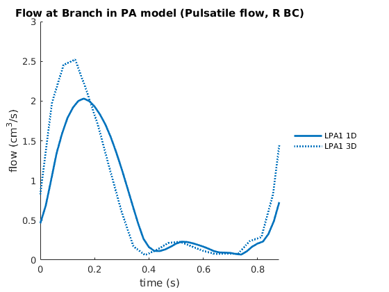 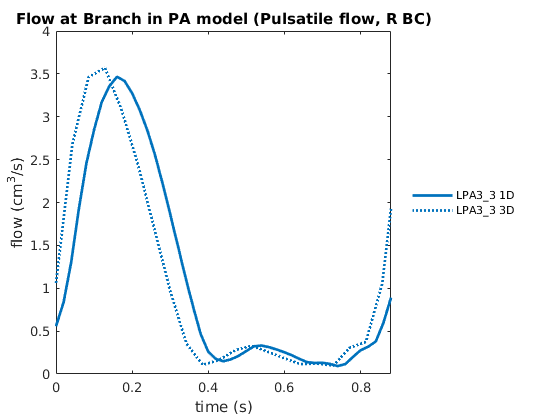 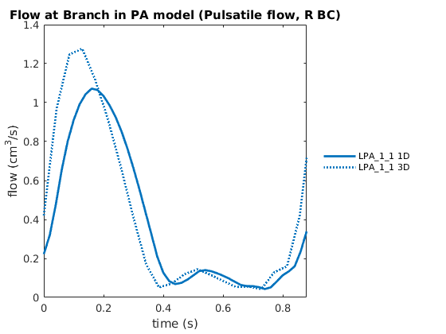 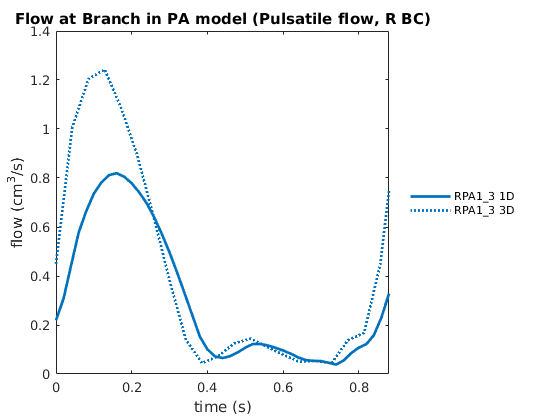 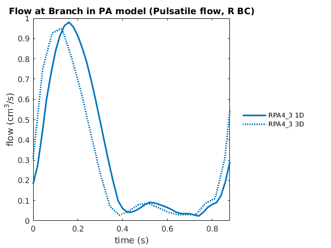 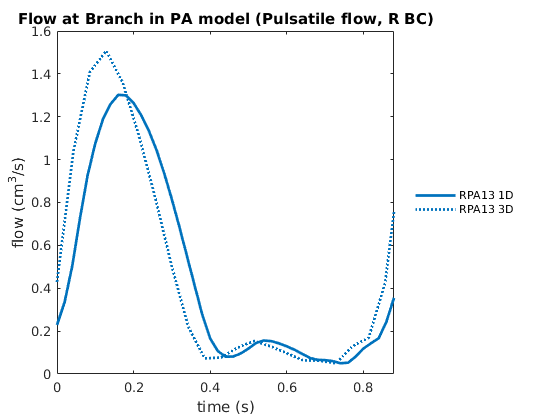 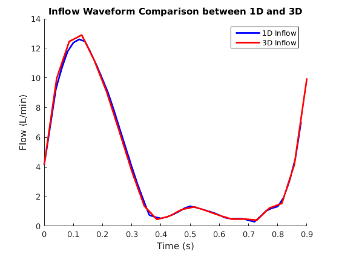 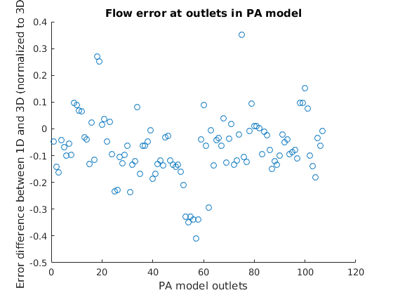
Pressure Plots
% Read pressure data pressure1D = []; vasculaturePressure = []; temp = load(strcat(prefix_name,branches{2},'_0','_pressure.dat')); [rows, ~] = size(temp); pressure1D(1,:) = temp(rows,:); vasculaturePressure(1,:) = temp(rows,:); % all other outlet pressures for ind_outlet = 2:size(outlet_segname,2) temp = load(strcat(prefix_name,outlet_segname{ind_outlet},'_pressure.dat')); [rows, ~] = size(temp); pressure1D(ind_outlet,:) = temp(rows,:); end % Convert from Barye to mmHg pressure1D = 0.0007500616827.*pressure1D; vasculaturePressure = 0.0007500616827.*vasculaturePressure; P = importdata('/home/melody/PH/CHD_model/VSD_QP/pulsatile/72-procs_case/VSD_QP_oldgui-allresults/all_results-pressures.txt','\t',1); pressure3D = P.data; % Convert from Barye to mmHg pressure3D = 0.0007500616827.*pressure3D; %%%%%%%%%%%% GENERATE PLOTS %%%%%%%%%%%%% % Plot all pressures figure(figureNum) figureNum = figureNum + 1; % Make colors for 3 of the same color plotted in a row co = [0 0.4470 0.7410; 0 0.4470 0.7410; 0 0.4470 0.7410; 0.8500 0.3250 0.0980; 0.8500 0.3250 0.0980; 0.8500 0.3250 0.0980; 0.9290 0.6940 0.1250; 0.9290 0.6940 0.1250; 0.9290 0.6940 0.1250; 0.4940 0.1840 0.5560; 0.4940 0.1840 0.5560; 0.4940 0.1840 0.5560; 0.4660 0.6740 0.1880; 0.4660 0.6740 0.1880; 0.4660 0.6740 0.1880; 0.3010 0.7450 0.9330; 0.3010 0.7450 0.9330; 0.3010 0.7450 0.9330; 0.6350 0.0780 0.1840; 0.6350 0.0780 0.1840; 0.6350 0.0780 0.1840 0 0 1 0 0 1 0 0 1 1 0 0 1 0 0 1 0 0 1 0 1 1 0 1 1 0 1]; set(groot,'defaultAxesColorOrder',co); hold on for i = 1:20:size(pressure1D,1) figure(figureNum) figureNum = figureNum + 1; name = sprintf('%s 1D',branches{i}); plot(t,pressure1D(i,tt),'DisplayName',name,'LineWidth',2); hold on name = sprintf('%s 3D',branches{i}); plot(t3D,pressure3D(tt3D,i+1),':','DisplayName',name,'LineWidth',2); lgd = legend('show','Location','eastoutside'); lgd.FontSize = 8; set(lgd, 'Interpreter','none'); legend('boxOff') xlim([0 cycle*dt]) xlabel('time (s)') ylabel('pressure (mmHg)') title('Pressure at outlet of branches in PA model (Pulsatile flow, R BC)') end % % % show legend % lgd = legend('show','Location','eastoutside'); % lgd.FontSize = 8; % legend('boxOff') % xlim([0 cycle*dt]) % xlabel('time (s)') % ylabel('pressure (mmHg)') % title('Pressure at outlet of branches in PA model (Pulsatile flow, R BC)') % % Plot pressures at each outlet individually % figure(figureNum) % figureNum = figureNum + 1; % hold on % % b = bar([pressure1D(:,end),pressure3D(end,2:end)'], 0.3); % colors = [0 0.4470 0.7410; % 0.8500 0.3250 0.0980; % 0.9290 0.6940 0.1250]; % b(1).FaceColor = colors(1,:); % b(2).FaceColor = colors(2,:); % b(3).FaceColor = colors(3,:); % % % Show legend % legend('1D','3D Rigid','3D FSI'); % % % Set axis labels and title % set(gca, 'XTick', 1:size(pressure1D), 'XTickLabel', branches); % ax = gca; % ax.XTickLabelRotation = 45; % ylabel('Pressure (mmHg)') % name = sprintf('Pressure at outlet in PA model (Pulsatile flow, R BC)'); % title(name) % Plot Pressure Waveform at inlet figure(figureNum) figureNum = figureNum + 1; hold on; plot(t, pressure1D(1,tt),'b','LineWidth',2); hold on; plot(t3D, pressure3D(tt3D,2),'r','LineWidth',2); xlabel('Time (s)'); ylabel('Pressure (mmHg)'); title('Pressure Comparison between 1D and 3D Inlet'); legend('1D Pressure','3D Pressure'); % Average pressure at each outlet and inlet figure(figureNum) figureNum = figureNum + 1; hold on avg_pressure1D = mean(pressure1D(:,tt),2); avg_pressure3D = mean(pressure3D(tt3D,2:end),1)'; plot((avg_pressure1D-avg_pressure3D)./avg_pressure3D,'o') xlabel('PA model outlets'); ylabel('Error difference between 1D and 3D (normalized to 3D)'); title('Pressure error at outlets in PA model'); colors = [0 0.4470 0.7410; 0.8500 0.3250 0.0980; 0.9290 0.6940 0.1250]; b(1).FaceColor = colors(1,:); b(2).FaceColor = colors(2,:);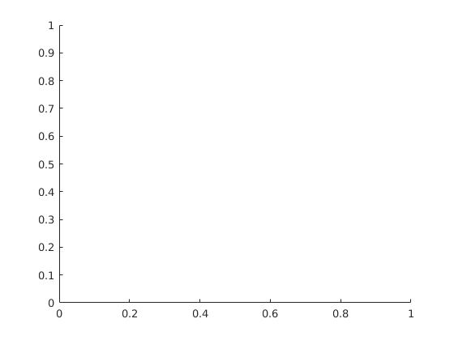 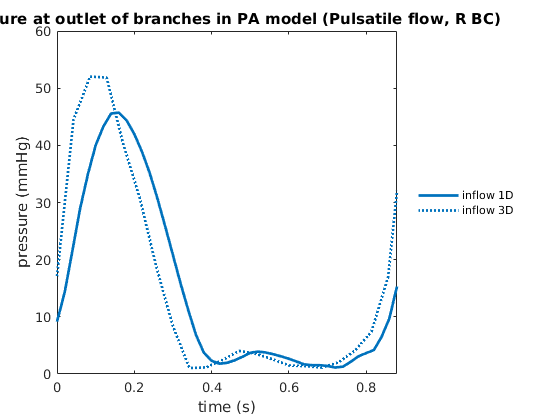 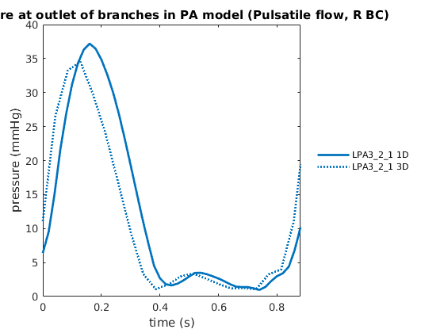 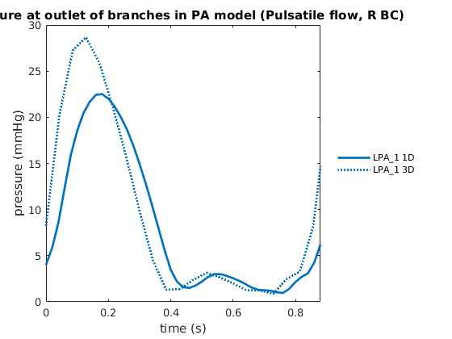 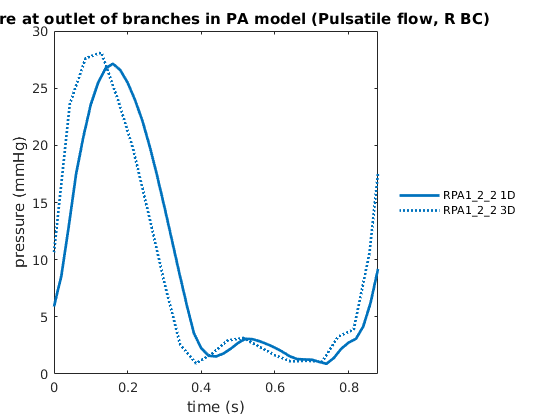 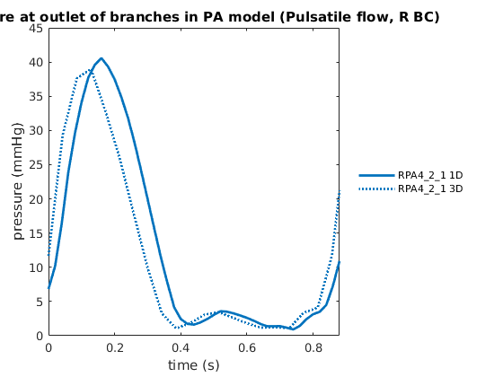 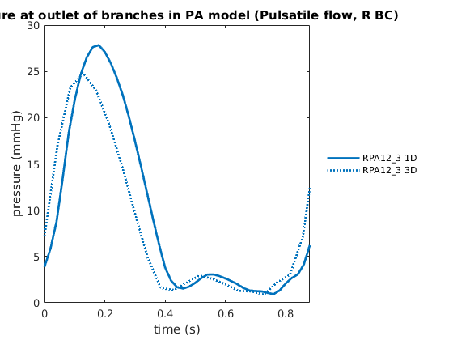 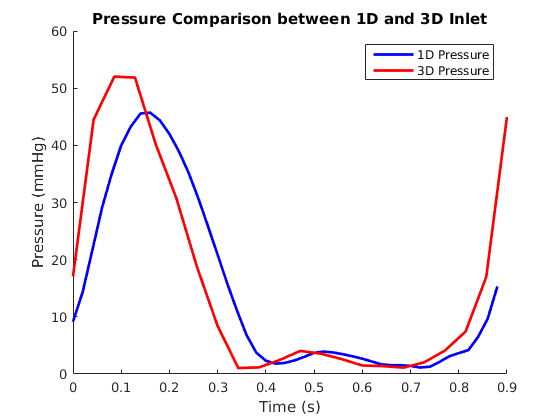 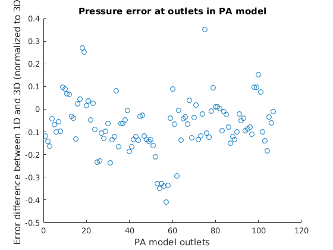
WSS Plots
viscosity = 0.04; % Area outlet differences % 3D area area3D = load('/home/melody/PH/CHD_model/VSD_QP/SU0201_2009_outletArea.txt'); % Read WSS data wss1D = []; vasculaturewss = []; temp = load(strcat(prefix_name,branches{2},'_0','_wss.dat')); [rows, ~] = size(temp); wss1D(1,:) = temp(rows,:); vasculaturePressure(1,:) = temp(rows,:); % 3D outlet areas wss3D = []; % all other outlet WSS for ind_outlet = 2:size(outlet_segname,2) temp = load(strcat(prefix_name,outlet_segname{ind_outlet},'_wss.dat')); [rows, ~] = size(temp); wss1D(ind_outlet,:) = temp(rows,:); wss3D(ind_outlet-1,:) = 4*viscosity*flow3D(tt3D, ind_outlet+1)./(pi*sqrt(area3D(ind_outlet-1)/pi)^3); end % 1D area area1D = pi*((4*viscosity*mean(flow1D(:,tt),2))./(pi*mean(wss1D(:,tt),2))).^(2/3); % Plot average WSS at outlets figure(figureNum) figureNum = figureNum + 1; hold on avg_wss1D = mean(wss1D(2:end,tt),2); avg_wss3D = mean(wss3D(:,:),2); plot(avg_wss1D,'bo'); hold on; plot(avg_wss3D,'ro'); xlabel('PA Model Outlets'); ylabel('WSS (dyn/cm2)'); title('WSS comparison between 1D and 3D') legend('1D WSS', '3D WSS'); % Plot outlet areas figure(figureNum) figureNum = figureNum + 1; hold on; plot(area1D(2:end),'bo') hold on; plot(area3D,'ro') title('Area of 1D and 3D outlets'); legend('1D area','3D area') % Average WSS error at each outlet figure(figureNum) figureNum = figureNum + 1; hold on plot((avg_wss1D-avg_wss3D)./avg_wss3D,'o') xlabel('PA model outlets'); ylabel('Error difference between 1D and 3D (normalized to 3D)'); title('WSS error at outlets in PA model'); % Average WSS vs. area at each outlet figure(figureNum) figureNum = figureNum + 1; hold on plot(area1D(2:end),avg_wss1D,'bo'); hold on; plot(area3D, avg_wss3D, 'ro'); legend('1D WSS', '3D WSS'); xlabel('Area (cm^2)'); ylabel('WSS (dyn/cm2)'); title('WSS comparison between 1D and 3D')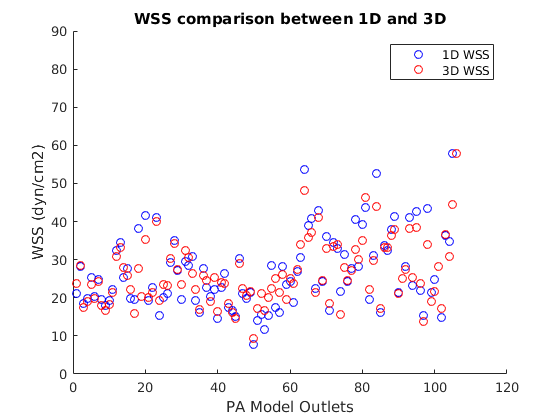 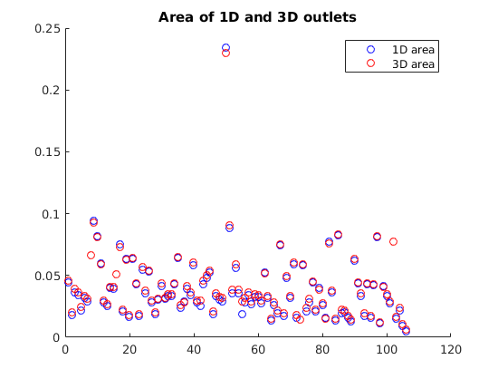 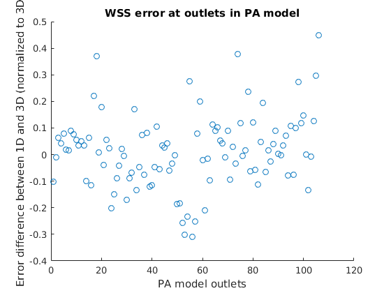 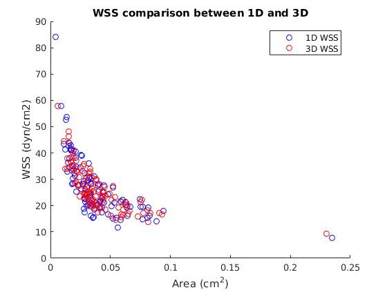